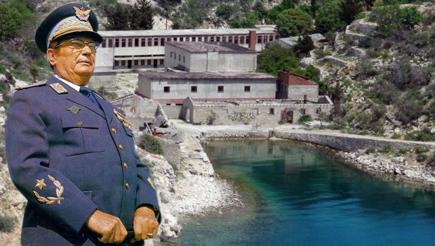

Smrtna kazen v Jugoslaviji
V prvih letih po drugi svetovni vojni, potem ko je komunistična partija prevzela oblast in obenem tudi popoln nadzor nad pravosodjem, je v Jugoslaviji nastopilo obdobji najostrejše politično kazenske represije, ki je slonela predvsem na Zakonu o kaznivih dejanjih zoper ljudstva in države. Leta 1951 je bil sprejet nov kazenski zakonik, kar je razlog za občutno milejše kazni sodišča. V Sloveniji so bile obsodbe na smrt razmeroma redke, zlasti če jih primerjamo z obdobjem med letoma 1945 in 1951, ko so slovenska sodišča z usmrtitvijo kaznovala kar 211 oseb, od tega 203 osebe zaradi političnih kaznivih dejanj. Po letu 1951 v Sloveniji smrtnih kazni zaradi političnih deliktov ni bilo več, izrečenih pa je bilo 12 obsodb na smrt za druga kazniva dejanja, zlasti za umore (Česnik,2004,str.34-36).
